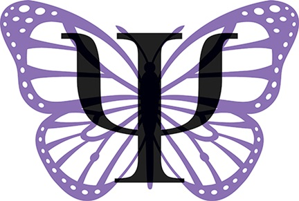

Sobre mí
La licenciada Yamila Cañete, egresada de la Universidad de Morón, ofrece un enfoque integral y especializado en diversas áreas de la psicología. Con amplia experiencia como perito judicial, su trabajo destaca en casos de violencia familiar, intervención en contextos de jóvenes con antecedentes penales o problemas judiciales, y preparación de niños y adolescentes para entrevistas en Cámara Gesell. Su compromiso profesional y humano se refleja en su capacidad para abordar situaciones complejas con sensibilidad y eficacia. Yamila trabaja con técnicas actualizadas y un enfoque ético que la posicionan como una profesional confiable y destacada en su campo.
